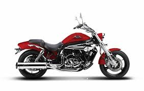

Mi Motocicleta
Hyosung 650 - Aquila

La Hyosung GV650 Aquila es una motocicleta estilo cruiser . Su motor bicilíndrico en V también se encuentra en las motos deportivas GT650R y GT650S.La GV650 tiene transmisión por correa, a diferencia de la GT650 , con la que comparte motor. A diferencia de la GT650 , tiene 5 velocidades. En ambos casos, el limitador de revoluciones está a 10500 RPM, pero la GV650 no tiene cuentarrevoluciones.Por diseño, la motocicleta se puede arrancar con el caballete bajado cuando la marcha está en posición neutra.